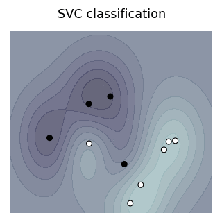
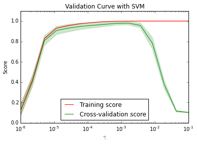

A Practical Guide to Applied Machine Learning
Jeremy Gore
Autumn Conference 2015-10-05
Presentation instructions
- Press ESC to enter the slide overview
- Press F to display full screen
- Press B or . to pause the presentation
- Press S to display the speaker view with notes
- Alt+click on any element to zoom in on it, Alt+click anywhere to zoom back out
- Swipe to move on mobile devices
Topics
Will Cover
- What is ML
- Job process
- Python with scikit-learn
- Major supervised algorithms
Won't Cover
- Other algorithms
- Other Plaforms
- Structured and sequential models
What is machine learning?

Core Concepts
Data
- Items
- Features
- Labels
- Classes
Models
- Algorithms
- Parameters
- Hyper-parameters
- Ensembles
Hardware and Software
Recommended Python ML Stack
- Python
- Pandas
- scikit-learn
- scikit-neuralnetwork
- Theano
You must install a compiler (g++) and ideally NVIDIA's CUDA
$ conda install mingw libpython
$ pip install theano scikit-neuralnetwork
The steps of a machine learning job
- Know your problem
- Know your data
- Set up your test harness
- Spot check a variety of algorithms
- Fine tune your best models
1. Know your problem
- What problem are you trying to solve?
- Is machine learning the right choice?
- What kind of machine learning is warranted?
- Is there a simpler model which you should be using?
- What scoring algorithm should you use?
Machine learning is appropriate when the problem is too dynamic or complex to be handled by simple rules or models
Flavors of Machine Learning
Supervised
- Classification
- Regression
- Ranking
Unsupervised
- Clustering
- Density estimation
- Pattern identification
- Representation learning
Hybrid
- Semi-supervised
- Reinforcement learning
Data and models
- Tabular data
- Structured data
- Graphical models
- Sequential or process models
2. Know your data
- Where is it, how can I get it, and am I allowed to use it?
- What form is it in, and how do I convert it to a form that can be analyzed?
- What does it look like?
- Is it any good and do you have enough of it?
- Are your classes biased and do you need to compensate for that?
You need many more samples than features or parameters to learn effectively.
Data Wrangling / Munging

Good luck!
- Convert to correct format
- Handle blanks
- Convert categorical values to numeric
- Remove unhelpful features
- Add helpful features
Data i/o with Pandas
import pandas as pd
# Load the data from a csv file
df = pd.read_csv("input/data.csv");
# Clean up data
# Get features matrix 'X' for feature names (don't include ID!)
X = df[features].values
# Get labels vector 'y'
y = df["label_name"].values
# Write out data later...
predict_df = pd.DataFrame({'Id': ids, 'Label': predictions })
predict_df.to_csv("output/predict.csv")
The curse of dimensionality
The more dimensions you have, the closer two random points in a bounded space are.

Consider reducing your features
from sklearn.decomposition import PCA
from sklearn.ensemble import RandomForestClassifier
3. Set up your test harness
- Set up your project directory
- Clean up your data into a form suitable for analysis
- Verify the scoring algorithm to use
- Set up your analysis routines
Standard train-test-predict workflow
from sklearn.ensemble import ExtraTreesClassifier
# Create a model
clf = ExtraTreesClassifier(n_estimators:1024,
class_weight:"subsample")
# Fit the model
clf.fit(X_train, y_train)
# Verify performance
print clf.score(X_test, y_test)
>>> 0.82
# To make predictions
y_predict = clf.predict(X_predict)
Preprocessing and Pipelines
from sklearn.preprocessing import StandardScaler
from sklearn.pipeline import Pipeline
from sklearn.svm import SVC
# We could preprocess like this:
ss = StandardScaler()
X_train_prep = ss.fit_transform(X_train)
X_test_prep = ss.transform(X_test)
clf = SVC(kernel="rbf", class_weight="auto");
clf.fit(X_train_prep, y_train)
# Or we could simplify with a pipeline
clf = Pipeline([('ss', StandardScaler()), ("svc", SVC(kernel="rbf"))])
# You can even set parameters on it
clf.set_params(svc__class_weight="auto")
clf.fit(X_train, y_train)
Splitting data for validation
from sklearn.cross_validation import train_test_split,
KFold, StratifiedShuffleSplit
# Quickly split into 80% train and 20% test
X_train, X_test, y_train, y_test =
train_test_split(X, y, test_size=0.2)
# Or split into 5 folds
folds = KFold(y.length, 5, shuffle=True)
for i_train, i_test in folds:
X_train, X_test = X[i_train], X[i_test]
y_train, y_test = y[i_train], y[i_test]
# Or generate 5 random splits preserving class percentages
sss = StratifiedShuffleSplit(y, 5, test_size=0.2)
# etc.
4. Spot check a variety of algorithms

No Free Lunch Theorem
No one algorithm will be suitable for all problems and any algorithm could be the right one... but in practice only a handful of algorithms are really worth considering.
Random Forests
Neural Networks
Support Vector Machines
Cheap Algorithms
Standard algorithm generator
I recommend setting up a reusable generator of starter models
def standard_clfs():
yield ExtraTreesClassifier(n_estimators=256)
yield Pipeline([
('feat', RandomForestClassifier(max_depth=3,
n_estimators=64, class_weight="auto")),
('et', ExtraTreesClassifier(n_estimators=256))])
yield Pipeline([
('scale', StandardScaler()),
('svc', SVC())])
for clf in standard_clfs():
print clf.fit(X_train, y_train).score(X_test, y_test)
Decision Trees
- Easily understood
- No preprocessing
- Fast and cheap
- Overfits
- No mathematical processing
from sklearn.tree import
DecisionTreeClassifier, DecisionTreeRegressor
Random Forests
- No preprocessing
- Minimal tuning
- Fast
- Reliably good results
- No mathematical processing
from sklearn.ensemble import
RandomForestClassifier, RandomForestRegressor,
ExtraTreesClassifier, ExtraTreesRegressor
Linear Transformations
$$\begin{align} s_j^{(1)} =& \sum_{i} x_{i} w^{(in\rightarrow 1)}_{i\rightarrow j}\\ S^{(1)} =& X W^{(in\rightarrow 1)}\\ \end{align}$$

Neural Networks
- Flexible architecture
- Superior accuracy
- Learn progressively higher-level features
- Computationally intensive
- Long training times
from sknn.mlp import Classifier, Regressor, Layer, Convolution
layers = [Layer("Rectifier", units=100), Layer("Softmax")]
clf = Classifier(layers=layers)
Deep Neural Networks




Support Vector Machines
- High quality class boundaries
- Pretty good accuracy
- One-class training!
- Lots of tuning
- Overfit easily
- Not suitable for large training sets
from sklearn.svm import SVC, SVR
Keep your eyes open!
5. Fine tune your best models

- Try adding or removing features
- Use grid searches to fine-tune hyperparameters
- Train longer
- Make a weighted ensemble of multiple models
The bias-variance tradeoff
Bias
Variance
Tuning Hyperparameters
from sklearn.grid_search import GridSearchCV,
from sklearn.cross_validation import StratifiedShuffleSplit
params = {"gamma": np.logspace(-9, 3, 13)}
splits = StratifiedShuffleSplit(y, n_iter=3, test_size=0.2)
grid = GridSearchCV(SVC(), param_grid=params, cv=splits)
grid.fit(X_train, y_train)
print grid.best_params_, grid.best_score_
Model performance with data

from sklearn.cross_validation import ShuffleSplit
from sklearn.learning_curve import learning_curve
train_sizes = np.linspace(.1, 1.0, 9)
cv = cross_validation.ShuffleSplit(
len(y), n_iter=10, test_size=0.2)
train_sizes, train_scores, test_scores = learning_curve(
clf, X, y, cv=cv, train_sizes=train_sizes)
Thank you!
Further reading
- Replay this presentation on GitHub
- Machine learning mastery blog
- Machine Learning Udacity course series
Development Tools
- Python language
- scikit-learn ML library
- scikit-neuralnetwork ANN library
- Theano numerical library